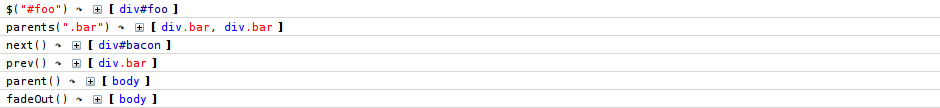
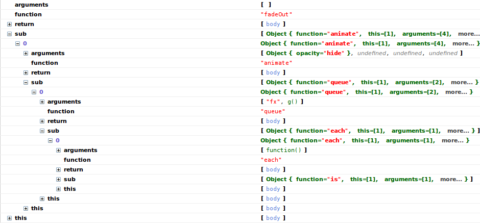

jQuery-inlog
jQuery-inlog allows you to easily debug your jQuery code. See exactly what you pass to functions, what they return and in which context (this-value) they were executed.
- No more alert($obj.length) to see if your selector worked.
- No more pain when chaining many calls and figuring out which one fails
NEW: See nested or recursive calls in the right order. Wooot.
Without changing any of your code! I call it black-box magic. Or short: black magic. Or even shorter: js
The original idea came from https://github.com/fmsf/jQueryLog, which was a modified version of the jQuery core rather than a plugin at the time I started with jQuery-inlog.
tl;dr Example
For those of you who can't wait or don't want to read the example.
- Open the Firebug console (hint: F12)
- Press this button (), the following code will then be run:
- Be amazed
Example
Some random example with demo code
The markup
The jQuery code
The magic on your console (default settings)
Verbose magic {maxDepth: -1}
The last branch was expanded to see how much is getting logged

More verbose magic {maxDepth: -1, thisValue: true}

Hardcore raw magic {rawOutput: true}
Documentation / Reference
Include jquery.inlog.js after jQuery core and enable it by calling $l(true) or $l(options).
It's best practice to include $l(false); right after the part you want to inspect.
Options
You can call $l(options) any time to change options. Available options: